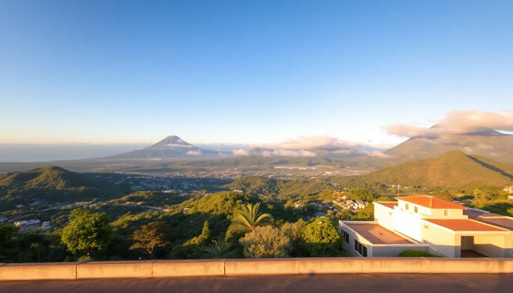

Where to Stay in Costa Rica: Best Areas for Every Budget

I’ve spent three weeks bouncing between Costa Rica’s most popular regions, and the biggest mistake I see travelers make is picking a base without understanding the trade-offs. San Jose is convenient but loud. Arenal is lush but rainy. Manuel Antonio delivers wildlife but demands cash. Tamarindo parties hard but lacks calm. This guide breaks down each area by budget—what you actually get for your money, where I’d stay again, and where I’d skip.
What’s the Real Cost of Staying in San Jose?
San Jose is your arrival hub, but most tourists rush out. I stayed three nights at Hotel Presidente downtown—clean, central, and around $90 a night. The rooftop bar gives you a solid view of the chaos below. If you’re on a tighter budget, Hostel Pangea in Barrio Amon runs about $20 for a dorm bed and has a pool that actually feels like a relief after a day of jet lag.
For food, skip the tourist strip on Avenida Central. Walk to Mercado Central for a $5 casado at Soda Tapia—rice, beans, plantains, and grilled meat that beats any overpriced restaurant. I also grabbed coffee at Café Rojo in Barrio Escalante, a neighborhood that feels more like a hipster enclave than a capital city.
- Budget (< $50/night): Hostel Pangea (Barrio Amon, social vibe)
- Mid-range ($80–$120/night): Hotel Presidente (central, rooftop bar, thin walls)
- Splurge ($150+/night): Gran Hotel Costa Rica (historic, Avenida Central location)
One warning: San Jose’s traffic is brutal. A 15-minute Uber from the airport to downtown can stretch to an hour during peak hours. Plan arrivals for late morning or early evening.
Is Arenal Worth the Splurge for Nature Lovers?
Yes—if you want to see an active volcano and soak in hot springs without a tour bus. I stayed at Arenal Observatory Lodge, about 15 minutes from La Fortuna. It’s the closest hotel to the volcano, and from my room I watched lava glow at night. Rooms start around $150, but the included breakfast and hiking trails make it worth it.
For mid-range, Hotel Secreto La Fortuna is a quiet gem with a small pool and gardens. I paid $100 a night and walked to downtown in 10 minutes. For budget travelers, Arenal Backpackers Resort has dorms for $15 and a massive pool—but expect loud music until midnight.
- Budget: Arenal Backpackers Resort (social, loud, hot springs access)
- Mid-range: Hotel Secreto La Fortuna (quiet, garden setting, walkable)
- Splurge: Arenal Observatory Lodge (volcano views, private trails, breakfast)
Skip the Tabacón Hot Springs resort if you’re on a budget—it’s $75 entry for a day pass. Instead, head to Free Natural Hot Springs along the river near the bridge on Route 142. It’s free, less crowded, and the water is just as warm.
Does Manuel Antonio Live Up to the Hype?
Manuel Antonio is stunning, but it’s also a price trap. The national park is incredible—I saw howler monkeys, sloths, and a toucan within an hour of entering. But staying inside the park or right at the entrance means paying $200+ a night for a room that’s basic.
I booked Hotel Si Como No—it’s perched on a hill with ocean views, a pool, and a wildlife refuge on-site. Rooms start around $180, and you get free shuttles to the park entrance. For mid-range, Hotel Costa Verde has studios with kitchenettes from $120. The property is built into the jungle, and you’ll hear howler monkeys at dawn.
- Budget: Hostel Vista Serena (dorms $20, pool, walking distance to beach)
- Mid-range: Hotel Costa Verde (studio with kitchen, jungle setting)
- Splurge: Hotel Si Como No (ocean view, wildlife refuge, shuttle)
For food, El Avión is a tourist trap—overpriced bar food inside an old plane. Walk to Café Milagro for good coffee and a $10 breakfast. Dinner at Kapi Kapi is worth the splurge (ceviche and grilled fish, $25–$35 per person).
Is Tamarindo Just a Party Town?
Tamarindo is the surf-and-party capital of Guanacaste, but it’s not one-note. I spent four nights here and found a split personality: the main strip (Avenida Central) is loud with bars and souvenir shops, while the north end (Playa Langosta) is quiet and residential.
I stayed at Hotel Tamarindo Diria—right on the beach, with two pools and a casino. Rooms start at $140, and you can walk to everything. For budget, Hostel La Botella de Leche has dorms for $18 and a pool that’s always buzzing. I met solo travelers there who loved the social scene.
- Budget: Hostel La Botella de Leche (social, pool, central)
- Mid-range: Hotel Tamarindo Diria (beachfront, pools, casino)
- Splurge: Cala Luna Boutique Hotel (north end, quiet, private beach)
For food, La Oveja Negra serves wood-fired pizza that’s better than anything I’ve had in Italy (seriously). Nogui’s is a local institution for breakfast—try the gallo pinto with eggs for $7. Avoid Witch’s Rock Surf Camp for dinner; the food is mediocre and overpriced.
What’s the Best Way to Get Between These Areas?
Renting a car is the most flexible option, but roads in Costa Rica are rough. I drove from San Jose to Arenal (3 hours) on Route 1, which is mostly paved but has potholes. The drive from Arenal to Manuel Antonio took 5 hours on Route 606—mountain roads with sharp turns. From Manuel Antonio to Tamarindo, I took the coastal route via Route 34, which took 6 hours.
If you don’t want to drive, Interbus runs shared shuttles between all four areas. I paid $50 for San Jose to Arenal, and $70 for Arenal to Manuel Antonio. They pick up from hotels and drop off at hotels—no hassle.
- Driving: Rent from Adobe Rent a Car (reliable, no hidden fees)
- Shuttle: Interbus (book online, punctual, A/C)
- Flying: Sansa Airlines flies between San Jose and Tamarindo ($100, 45 minutes)
FAQ
What’s the best area for first-time visitors? Start with Arenal. It’s easy to reach from San Jose, has the most variety of activities (hot springs, hiking, zip-lining), and feels safer than the coast. I’d spend 3–4 nights there, then move to Manuel Antonio for wildlife.
Is it safe to stay in San Jose for a few nights? Yes, but stick to Barrio Amon, Barrio Escalante, or the area around Hotel Presidente. Avoid walking alone after 10 PM on Avenida Central—it gets sketchy. I never felt unsafe, but I used Uber for evening trips.
Which area is best for budget travelers? Tamarindo has the cheapest dorms and street food. Hostel La Botella de Leche is $18 a night, and a casado at a soda (local diner) costs $5. Manuel Antonio is the most expensive for accommodation and food.
Conclusion
- San Jose is a functional hub—stay one night at Hotel Presidente, then move on.
- Arenal delivers the best nature-to-dollar ratio—book Arenal Observatory Lodge for volcano views.
- Manuel Antonio is a wildlife paradise but a budget killer—use Hotel Costa Verde for mid-range value.
- Tamarindo balances surf and nightlife—Hotel Tamarindo Diria is your safest bet for beachfront comfort.
- Skip rental cars if you’re not comfortable with rough roads; Interbus shuttles are reliable and cheap.